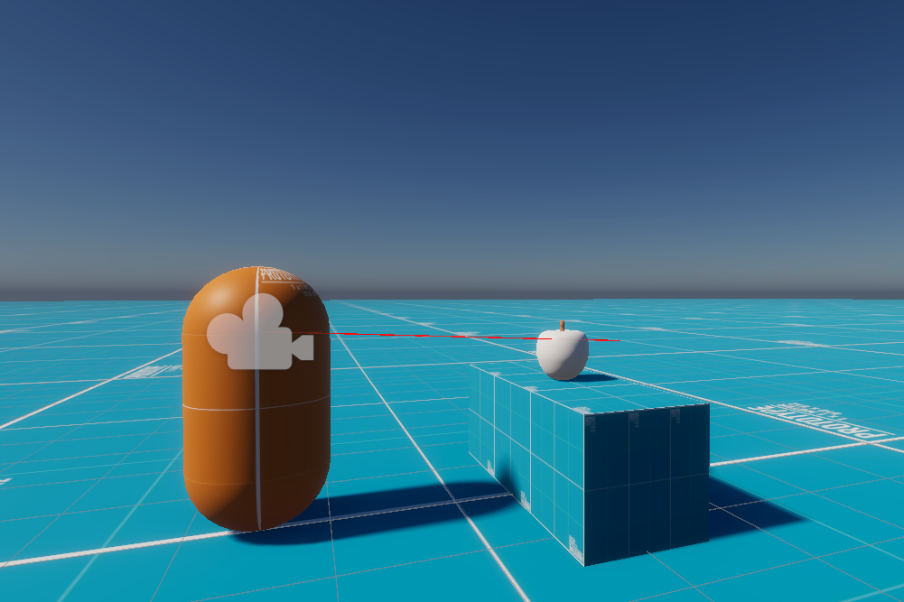
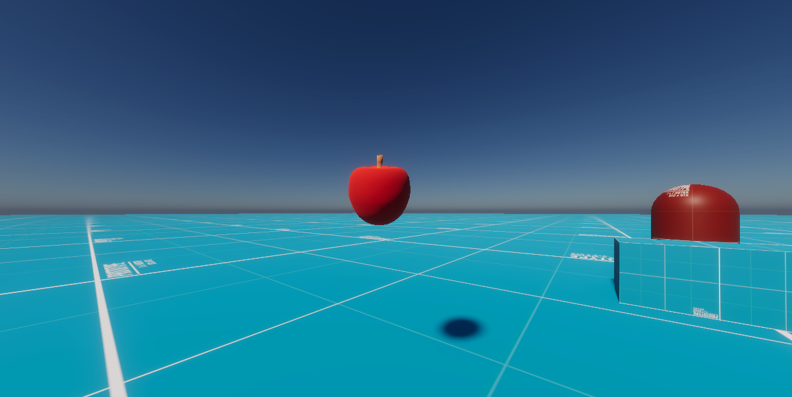

This week, I made progress on my game by adding a new feature that allows players to pick up objects.
I was lost at first since I hadn’t programmed anything like it before. To figure it out, I searched for
“pick up objects Unity” on YouTube and found a helpful video. I picked up two main ideas: one method
uses raycasting to see if the player is looking at an object, and the other highlights the object when
it's close enough and visible, signalling to the player that the object can be interacted with.
The link to the video that I watched this week:
youtube.com
C#
// Highlight.cs
using UnityEngine;
public class Highlight : MonoBehaviour
{
private Material originalMaterial; // save original material so it can be reverted
[SerializeField] private Material highlightMaterial;
// cache the renderer to avoid calling GetComponent repeatedly
private Renderer rend;
private void Awake()
{
// grab the Renderer on this object
rend = GetComponent();
// if renderer exists, store its current material
if (rend != null)
{
originalMaterial = rend.material;
}
}
// toggle highlight on or off
public void ToggleHighlight(bool enable)
{
// if no renderer, do nothing
if (rend == null) return;
// switch material based on the enable flag
if (enable)
rend.material = highlightMaterial; // highlight on
else
rend.material = originalMaterial; // revert to original
}
}
C#
// PlayerController.cs
using UnityEngine;
public class PlayerPickup : MonoBehaviour
{
[Header("Pickup Settings")]
[SerializeField] private LayerMask pickableLayerMask; // which objects can be picked up
[SerializeField] private Transform playerCameraTransform; // camera used for raycasting
[SerializeField] private Transform holdPoint; // empty object in front of player where items are held
[SerializeField] private float hitRange = 3f; // how far the player can reach to pick something up
private Quaternion pickUpRotationOffset; // store rotation offset so object keeps orientation when held
private RaycastHit hit; // stores raycast hit info
private Highlight lastHighlighted; // keep track of last highlighted object so it can turn it off
private GameObject heldObject; // currently held object (if any)
void Update()
{
// draw a ray in the editor for debugging
Debug.DrawRay(playerCameraTransform.position, playerCameraTransform.forward * hitRange, Color.red);
// check if are holding something
if (heldObject != null)
{
// move the object to hold point position each frame
heldObject.transform.position = holdPoint.position;
// keep its rotation offset relative to hold point
heldObject.transform.rotation = holdPoint.rotation * pickUpRotationOffset;
// drop object if player presses E
if (Input.GetKeyDown(KeyCode.E))
{
DropObject();
}
// while holding, make sure nothing else is highlighted
if (lastHighlighted != null)
{
lastHighlighted.ToggleHighlight(false);
lastHighlighted = null;
}
return; // skip raycast checks while holding
}
// reset highlight if nothing is hit
if (lastHighlighted != null)
{
lastHighlighted.ToggleHighlight(false);
lastHighlighted = null;
}
// shoot a ray forward from the camera
if (Physics.Raycast(playerCameraTransform.position, playerCameraTransform.forward, out hit, hitRange, pickableLayerMask))
{
// see if the object has a Highlight script
Highlight hl = hit.collider.GetComponent();
if (hl != null)
{
hl.ToggleHighlight(true); // turn highlight on
lastHighlighted = hl; // remember it so we can turn it off later
}
// if player presses E, pick up the object
if (Input.GetKeyDown(KeyCode.E))
{
PickUpObject(hit.collider.gameObject);
}
}
}
private void PickUpObject(GameObject obj)
{
heldObject = obj;
// disable physics while holding
Rigidbody rb = heldObject.GetComponent();
if (rb != null)
{
rb.isKinematic = true; // stop physics simulation
}
// calculate rotation offset between object and hold point
pickUpRotationOffset = Quaternion.Inverse(holdPoint.rotation) * heldObject.transform.rotation;
// parent object to hold point so it moves with the player
heldObject.transform.SetParent(holdPoint);
heldObject.transform.localPosition = Vector3.zero; // snap to center
}
private void DropObject()
{
if (heldObject == null) return;
// re-enable physics when dropped
Rigidbody rb = heldObject.GetComponent();
if (rb != null)
{
rb.isKinematic = false;
}
// unparent object so it’s free again
heldObject.transform.SetParent(null);
heldObject = null;
}
}
I started by breaking the problem into smaller pieces. The first thing I needed to do was figure out how
to check if the player is facing an object. To do this, I used a raycast, which I’ve discovered is super
handy in game development. A raycast is essentially a line used to check if it intersects with a
specific object. In this case, I can shoot a ray from the player's head in the direction they’re looking
each frame. If the ray hits an object on the “pickable” layer, it means the player is close enough to
grab it and is currently looking at it.

Once the raycast detects a pickable object, the code checks if that object has a highlight component. If
it does, the highlight is activated. This highlight provides a clear cue for the player, indicating that
the object can be picked up.
To implement the highlight, I created a new script that is applied to objects that can be picked up. This
script is straightforward; it simply changes the object's material to a new white material when the
player hovers over it.
Initially, I programmed the material to change to white while the object was hovered over, but I
encountered a problem reverting it when the player looked away. To solve this, I needed to change the
material back to its original state. I achieved this by first saving the original material to a
variable, allowing me to easily switch back to it later.

To pick up the object, I made it so that the object moves to the position of an empty game object that I
placed in front of the player model, which I call the “hold point.” This hold point acts like a fixed
reference in space relative to the player, so any object attached to it will follow the player’s
movement. By parenting the picked-up object to this hold point, I can make it smoother with the player
without manually updating its position every frame. I also store the rotation offset between the object
and the hold point when it’s picked up. Hence, the object maintains its original but effective, as it
allows me to “grab: objects instantly and keeps them visually aligned in front of the player while I
decide whether to drop or interact with them further.
How does my work this week fit into the bigger picture of my game’s development?
This week's progress lays an important foundation for future improvements, as the pickup system plays a
significant role in how players interact with the game world. By figuring out how players can grab and
move objects, I’m opening up a ton of new gameplay possibilities and making the environment feel way
more interactive. The ability to pick up objects enables more complex features, such as inventory
management and crafting, which are crucial for my game's focus on these elements.
What changes or features would make the pickup system feel more realistic and satisfying for the player?
To make the pickup system feel more realistic and satisfying, I suggest a few key improvements. First, I
would let objects retain their velocity when released, so players could throw them naturally instead of
having them stop abruptly when dropped. Second, I would improve how objects follow the player when they
are being held. Right now, they move in a fixed position relative to the hold point, which can cause
them to phase through walls or other objects. I’d like to make it so that if a held object collides with
something, it stops moving forward and therefore toward the player, rather than passing through objects,
creating a more believable physical interaction. In addition to preventing the picked-up object from
phasing through other objects, I believe that if the object moves slightly slower than the camera,
creating sway would give the player a sense of its mass. Finally, I could add a subtle audio feedback
when picking up or dropping objects, such as a sound effect that would make the action feel more
responsive and tactile for the player.
What will I do next week?
Next week, I plan to enhance the pickup system by incorporating several improvements I've considered,
including objects retaining velocity upon release, collision checks to prevent wall clipping, and a
slight delay or sway to add weight to objects. If I complete the additions on time, I would also like to
include various types of objects that can be picked up. I plan to distribute these objects throughout
the map, using logic to spawn different items more frequently in certain locations. Additionally, I want
to implement a system that allows players to hold these items in an inventory.